The Cat Distribution Service is a factory building roguelike
where you build and maintain a growing factory that produces
cats. From the usual cat patterns and colours to matcha and
alien cats, you will make it all at the Cat Distribution Service.
The current project is still in development, a playable demo will
be available soon!
Why Godot?
I chose to develop this game in Godot rather than Unity for a few key reasons. The main reason was to expand my horizons and learn another game engine! Another reason for using Godot was how lightweight it was compared to Unity, everything from launching the editor, building the game and entering play was a lot quicker and made the process a lot more enjoyable.
What Do I Miss?
Unity Events. Unity Events are super versatile and easy to use/implement, they allow other people in the engine to easily hook things up and create in-game events without even touching the code base. Godot has Signals as an in editor event solution but in my opinion Unity Events are overall much better.
Factory Parts
The most important system to nail down for this game is the factory parts. A goal of mine when creating them was to make my pipeline comprehensive but fast in order to test out a variety of different parts quickly. I did this with a few tricks.
Composition And Inheritance
With a combination of composition and inheritance I can create factory parts that have the same base features but with the ability to easily add varying effects.
For example, an event is triggered when exporting a resource and I can easily hookup any number of unique nodes that do something when a resource is exported or imported, or I can create a replacement for the resource exporter that inherits from the same script with variations in how it works. This way I can alter the resources passed in and out as well as do unique things for each factory part all while having them keep the same basic functionality.
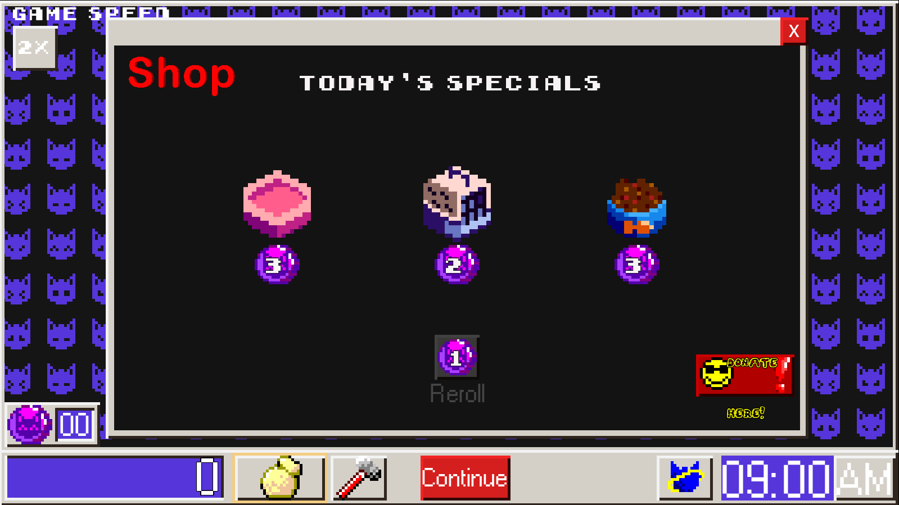
(Shop)
(Factory example)
Resources
In order to streamline the process more I use something in Godot called a custom resource. A custom resource is essentially the godot version of a scriptable object (from unity) which means it is a class that can store data and be referenced by any script that holds a reference to the base resource (it does not need a runtime specific reference). These custom resources hold information like the stations name, the sprite of the station, a description of the station, the rarity, the price and a reference to the prefab of that station. This way I can use this information to display data when hovering over the station, I can use it in the shop to represent the station as well as in the inventory of the player, then when they want to place it down, the custom resource can pass the prefab to the player controller to instantiate it.
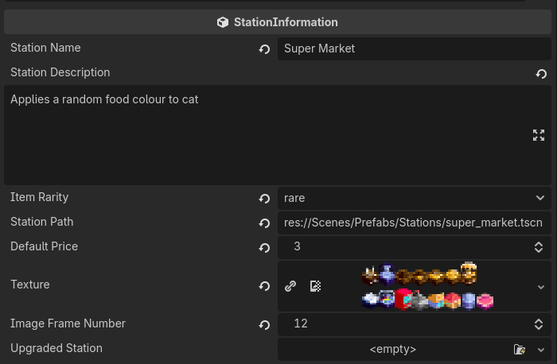
(Station info resource)
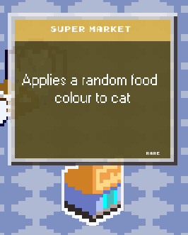
(In game station)
This really makes the process a lot easier, as in order to implement and test a new station, all I have to do is create the new prefab, add any unique scripts or combination of already made scripts and create the custom resource. Below are some screenshots of the excel sheet I use to test out new factory part ideas and see how they might work in game.
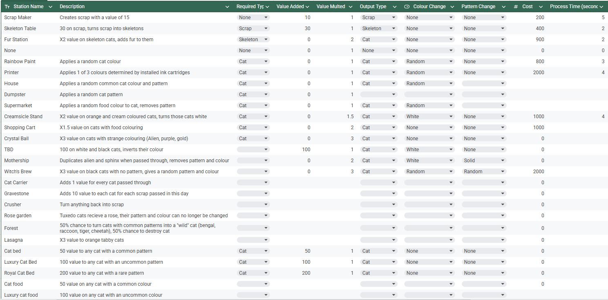
(Factory part list)
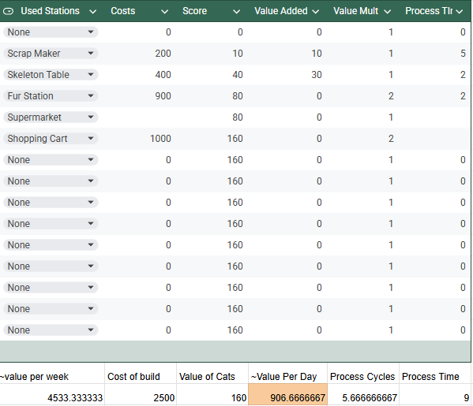
(Day earnings simulation)
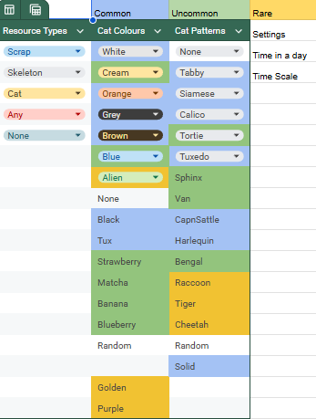
(Cat patterns and colours)
Design Documents
From Design to Prototype
Here are some side by side examples of UI design vs the prototype implemented into the game
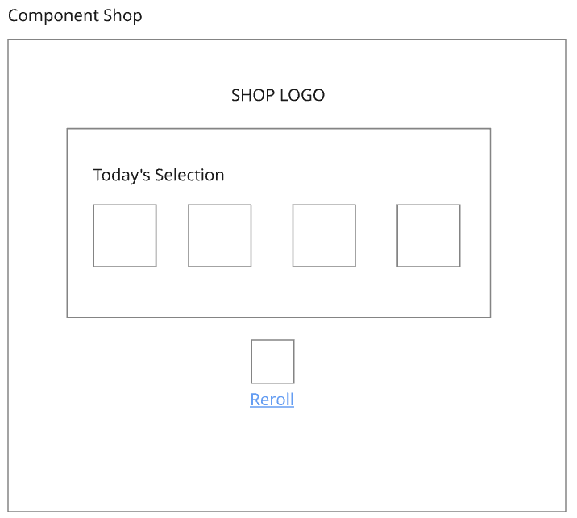
(Shop UI design)
(Shop prototype)
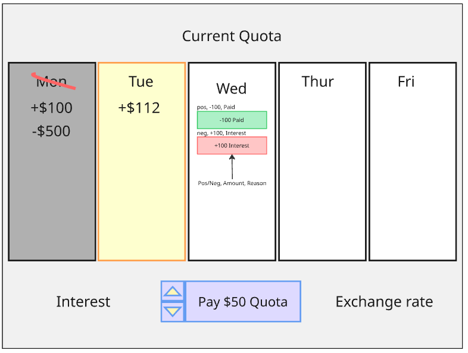
(Calendar UI design)
(Calendar prototype)
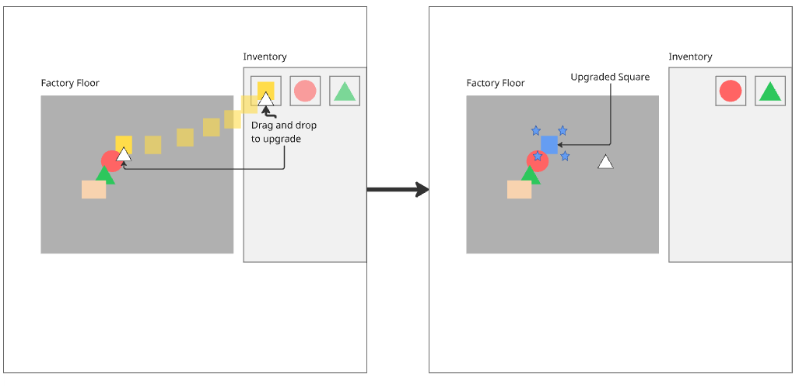
(Upgrade system design)
(Upgrade system Prototype)
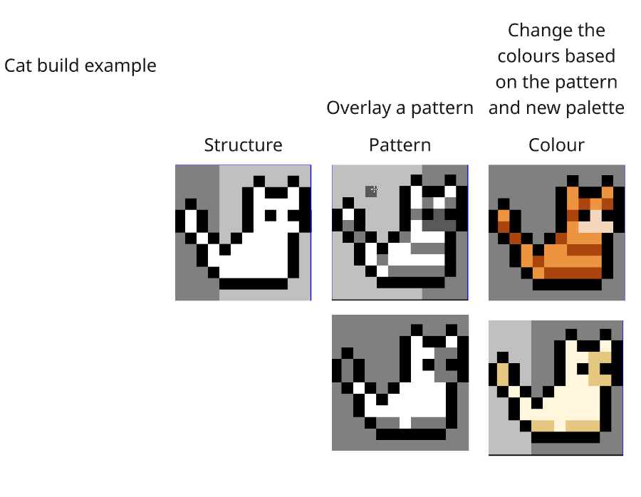
(Variable cat creation design)
(Gameplay example)
Scope and Cutting
One big decision I had to make while developing was to cut a core feature of the game. This feature had factory workers who enabled the factory pieces to work, their design would have the player managing and keeping the workers happy while the factory worked.
In the end I decided to cut them as I could slowly see the features adding up and the scope increasing every time I worked on them, this included keeping them fed, keeping them happy, fights breaking out, machines overheating among many other things. Looking at the gameplay I discovered that the core experience of the game was not managing these workers but instead it was building the factory, the workers ended up being an annoyance that players had to worry about instead of an engaging part of the game.
What helped me decide to cut them was looking at the impactful decisions players could make. The workers did not offer many decisions that were interesting for players and while they did help add some tension, chaos and funny moments, the resources required to add them in, make them engaging to manage and enjoyable to interact with, outweighed the benefits.
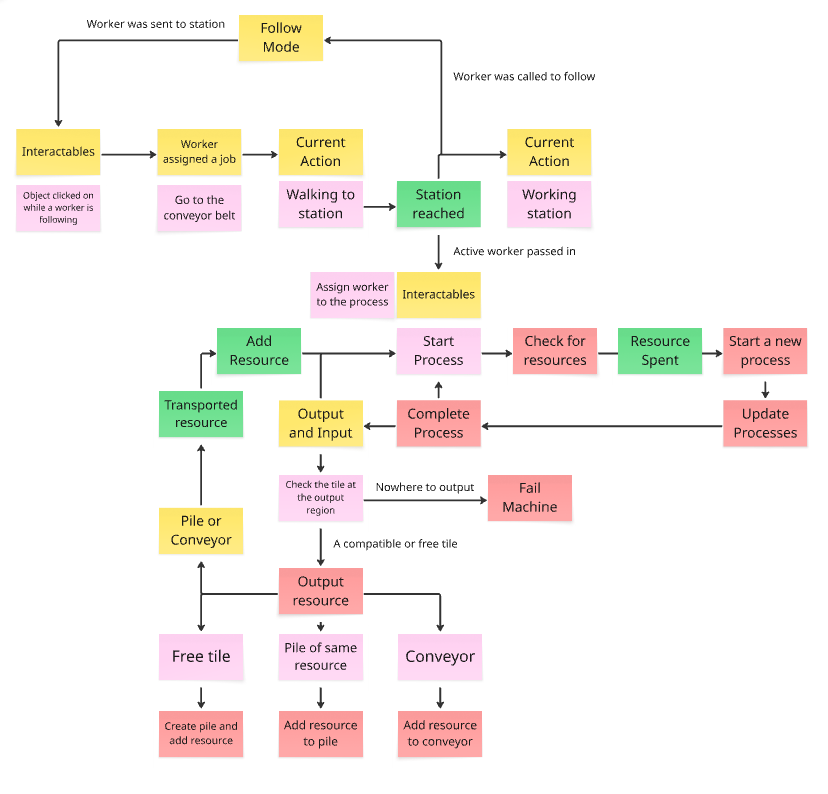
(Diagram on worker to factory interaction)
(Old station upgrade system)
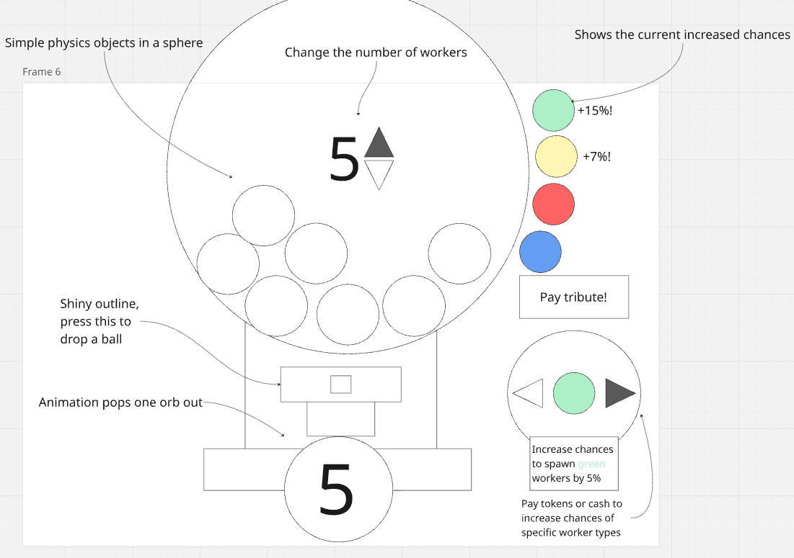
(A design for how more workers would be gained)
Conclusions
This project has been a great learning experience, going outside my comfort zone and making a genre I am not really familiar with has helped expand my design capabilities. I except a demo for this project to be out in the near future and depending on how it turns out possibly a full version.